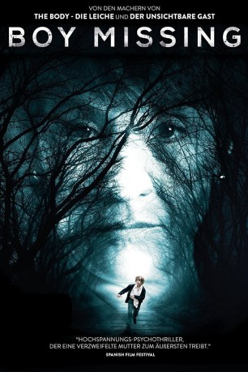

#8532 Boy Missing
 
 IMDB-Wertung: 6.3 / 10
IMDB-Wertung: 6.3 / 10  Metascore: 0
Metascore: 0 
Nachdem der kleine, taub-stumme Victor (Marc Domènech) orientierungslos auf einer Landstraße gefunden wird, wird seine Mutter Patricia (Blanca Portillo) informiert, die sich auf der Stelle auf den Weg zu ihrem Sohn macht. Bei der Polizei gibt Victor zu verstehen, dass er auf dem Weg zur Schule von einem seltsamen Mann entführt wurde. Die Polizei glaubt in Charlie (Andrés Herrera) einen Verdächtigen gefunden zu haben, da der werdende Vater gerade in finanziellen Schwierigkeiten steckt und kein Alibi hat. Als die Polizisten Charlie dennoch gehen lassen müssen, wendet sich Patricia an Victors Vater Raul (José Coronado) und will, dass er Charlie bedroht. Zu spät stellt Patricia fest, dass die Polizei sich doch geirrt haben könnte
Jahr: 2016
Dauer: 105 Minuten
FSK: 16
Land: Spanien Studio: Film Factory EntertainmentTonspuren:
Untertitel: Deutsch,
Auflösung: 1080p (1920x800) Größe: 4577 MB
Genre: Thriller
Regisseur: Mar Targarona
Drehbuch: Oriol Paulo
Soundtrack: Marc Vaíllo
Darsteller:
 Blanca Portillo als Patricia
Blanca Portillo als Patricia Antonio Dechent als Requena
Antonio Dechent als Requena Vicente Romero als Carreño
Vicente Romero als Carreño- Marc Domènech als Víctor
- Nausicaa Bonnín als Vicky
- Andrés Herrera als Charlie
 José Coronado als Raúl
José Coronado als Raúl Macarena Gómez als Raquel
Macarena Gómez als Raquel- Marieta Sánchez als Alba
 Josep Maria Pou als Juez
Josep Maria Pou als Juez- Paulina Gálvez als Madre Daniel
- Miguel Ángel Jenner als Calvo
- Paco Manzanedo als Escarmentador 1
- Sergi Subirà als Escarmentador 2
- Raquel Pérez als Inés
- Francesc Albiol als Puerta
- Ismael Abadal als Daniel
- Ramon Fontserè als Abogado Charlie
- Xavi Siles als Agente Trajeado
- Roger Zanuy als Agente Incógnito
- Roger Vidal als Agente 348
- Albert Mèlich als Guardia Civil 1
- Marc Ribera als Guardia Civil 2
- Sali Cervià als Periodista
- Mercè Montalà als Directora colegio
- Lluís Altés als Director Banco
- Lluïsa Castell als Doctora
- Bárbara Nicolau als Recepcionista oficina Patricia
- Teresa Sirvent als Funcionaria Juzgado
- Sergi Misas als Funcionario Juzgado
- Luciano Ochello als Amigo Daniel 1
- Pol Comas als Amigo Daniel 2
- Ilias Stothart als Amigo Daniel 3
- Arnau Bedmar als Amigo Daniel 4
- Dani El Rojo als Portero local clandestino
- Blanca Martínez als Clienta baño
- Álvaro de Silva als Guarda Seguridad banco 1
- Jesús Perona als Guarda Seguridad banco 2
- Lluna Gay als Agente Periódico
- Toni Ramírez als Agente Vagabundo
- José Pérez Ocaña als Encargado Supermercado
- Miguel López als Fiscal
- Sergio Delgado als Agente 1
- Àlex Esteve als Agente trajeado 2
Datei: X:\2016(A-F)\Boy Missing (2016, FSK16, 1920x800).mkv seit 19.03.2018
Festplatte: HD 2016(A-Z)
 Es gibt insgesamt 147 Filme in der Gruppe '2016(A-F)'
Es gibt insgesamt 147 Filme in der Gruppe '2016(A-F)'